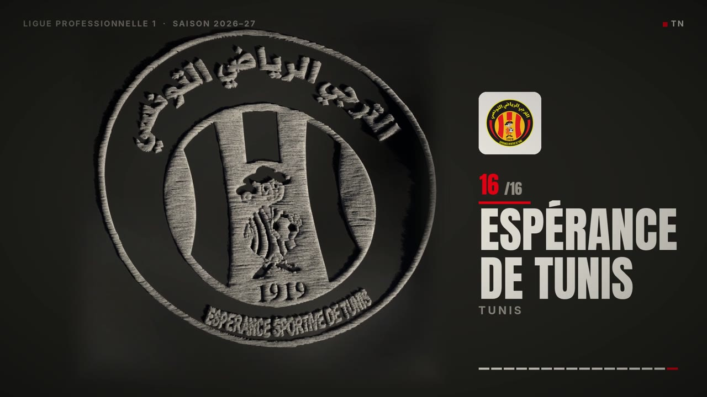
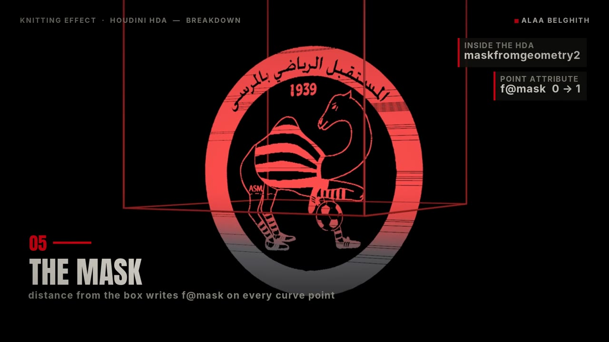

← Portfolio Own project · Houdini HDA + motion · 2026
Football Tunisia
Every crest of the Tunisian Ligue 1, knitted stitch by stitch: the league, the 16 clubs and the national team. Each logo is traced to vectors and grown as knitted cloth by one Houdini digital asset, then rendered in Karma in a single scripted batch: 18 crests, one node.
The asset, alaa.knitting_effect, reveals the knit with a radius and remap ramp, builds the stitches and yarn as swept, twisted strands, and can deform the knitted logo with a Vellum cloth. It is free on GitHub under MIT. The roll call is cut to the beat, 12 beats per crest at 180 BPM. Fan-made, not affiliated with the clubs or the Tunisian Football Federation.
Football Tunisia turns club crests into knitted cloth with a Houdini digital asset. The Tunisian Ligue 1 roll call includes 18 crests generated with one node and rendered in Karma in a scripted batch. A traced logo becomes polygons, then the asset builds stitch rows and twisted yarn; an optional cloth input can deform the result. The motion edit presents the collection as a visual roll call rather than a static logo sheet. This is a fan-made project, unaffiliated with the clubs or the Tunisian Football Federation. The asset is available free under the MIT license. For another team or league, the asset accepts vector artwork, a selected knit style and the final frame formats. A reveal radius and remap ramp control how the knit grows across the traced crest.


Frequently asked questions
How were the crests turned into knitted cloth?
A traced polygon logo feeds the procedural asset, which builds stitch rows and twisted yarn strands. Controls shape the knit reveal, stitch pattern and yarn, while an optional cloth input can deform the result. The animation presents each crest as knitted material rather than a flat graphic.
How many crests are included in the roll call?
The fan-made Tunisian Ligue 1 roll call includes 18 crests, generated with one Houdini node and rendered in Karma in a scripted batch. The project presents club marks as a knitted visual series and is unaffiliated with the clubs or the Tunisian Football Federation.
Can the knitting asset be used in another project?
The Houdini asset is available free under the MIT license. It accepts a traced logo as polygons and provides controls for the knit reveal, stitch pattern and yarn shape; an optional cloth input can deform the result. Review the license terms and prepare approved artwork before adapting another team’s or brand’s mark.